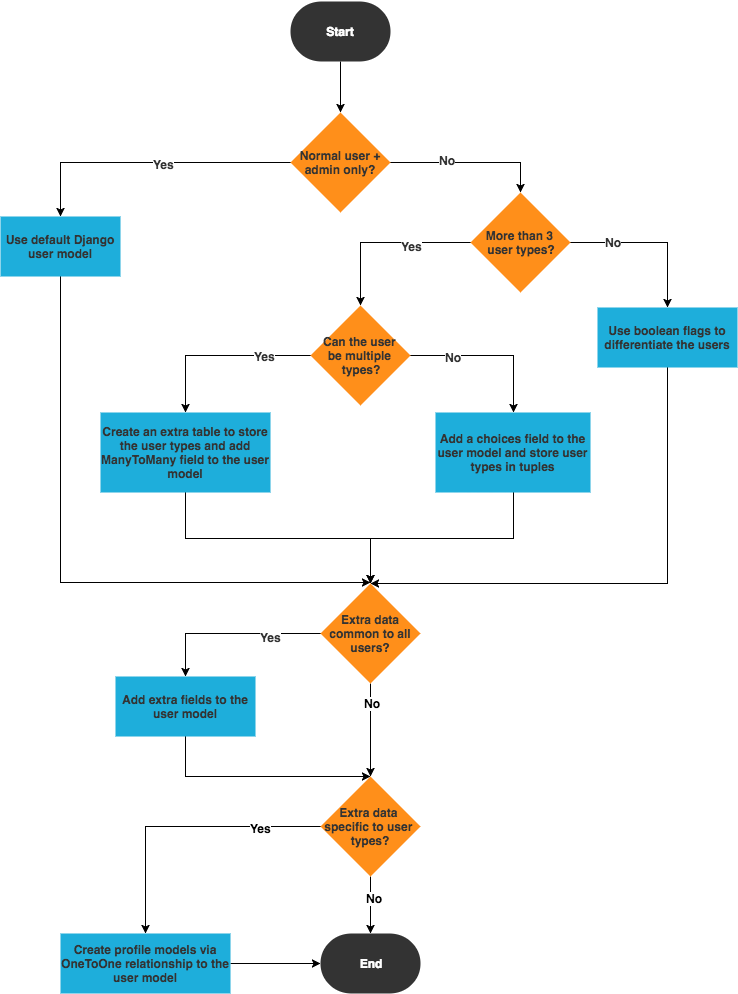
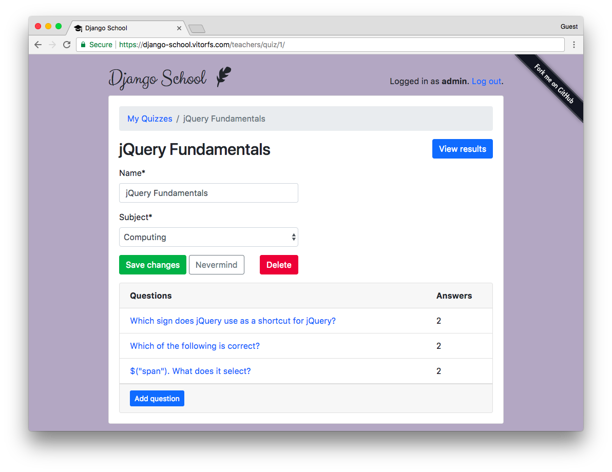
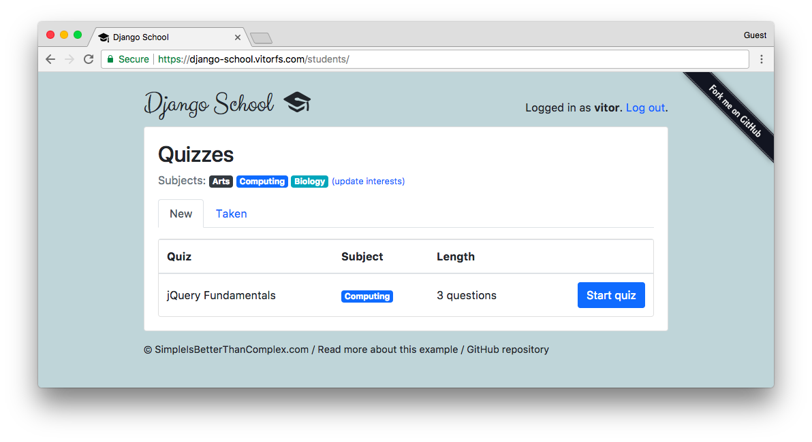
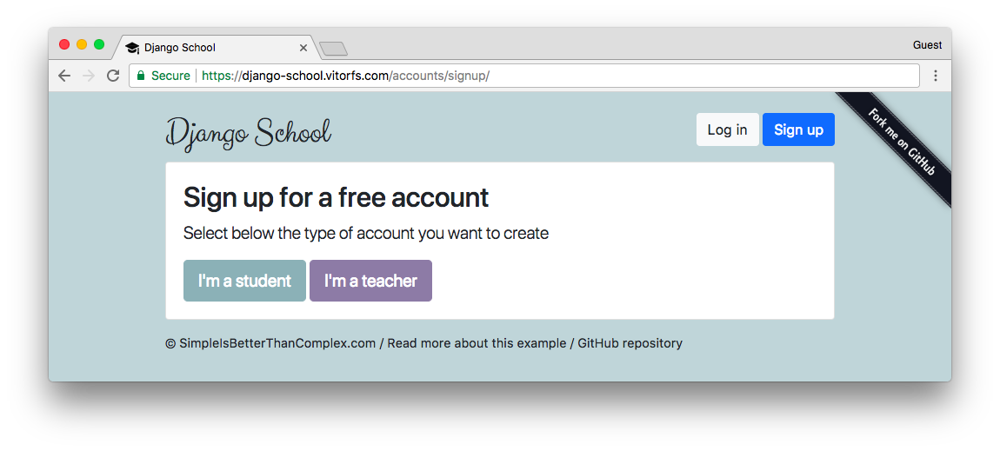
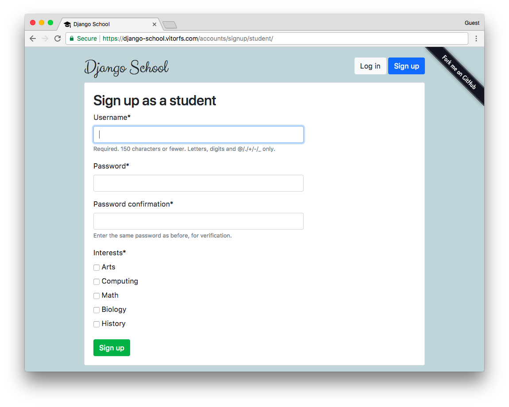
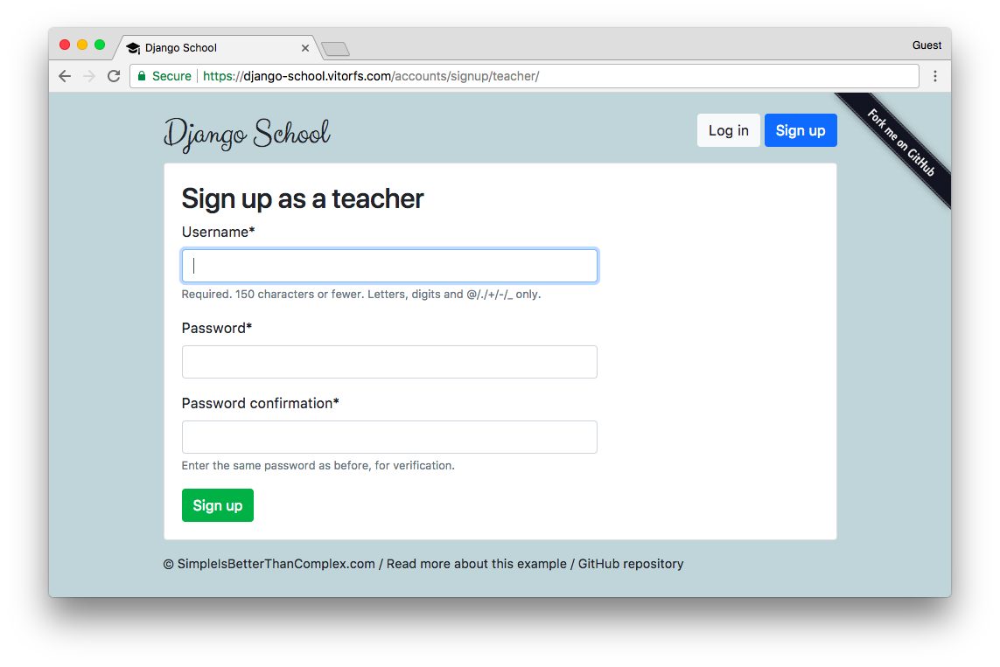

This is a very common problem many developers face in the early stages of the development of a new project, and it’s also a question I get asked a lot. So, I thought about sharing my experience with previous Django projects on how to handle multiple user types.
I’ve tried many different strategies. In this tutorial I will share my thoughts on this particular topic and share with you the strategies that worked best for me, depending on the requirements of the project.
Many of the design decisions depends on the requirements and business model of the application you are developing. I will try to cover as many different scenarios as possible. Read carefully and pick the best option for you.
If you learn better with examples or you are in a hurry right now, jump to the practical example. Otherwise, keep reading.
Rules of Thumb
What you are going to read next is not written in a stone. It’s just some general recommendations that fits most cases. If you have a good reason, or if not following those recommendations will result in a better application design, go ahead and break the “rules”!
1. No matter what strategy you pick, or what is your business model, always use one, and only one Django model to handle the authentication.
You can still have multiple user types, but generally speaking it’s a bad idea to store authentication information across multiple models/tables. Treat this model as an account rather than a user. Meaning, all users need an account to log in.
The business logic will be implemented in a different way, so no need to have username/password spread across multiple tables. After all, all accounts should share many common resources such as login, logout, password resets, password change.
2. Never user the built-in Django User model directly, even if the built-in Django User implementation fulfill all the requirements of your application.
At least extend the AbstractUser model and switch the AUTH_USER_MODEL on your settings.
Requirements always change. You may need to customize the User model in the future, and switching the
AUTH_USER_MODEL after your application is in production will be very painful. Mainly because you will need to update
all the foreign keys to the User model. It can be done, but this simple measure (which, honestly, is effortless in
the beginning of the project) can save you from headaches in the future.
This will give you freedom to add custom methods to the User model without having to rely on a OneToOne model or having to implement an Abstract model.
Also, the built-in Django model have some old design decisions (which are kept that way because of backwards compatibility) that are not compatible with many application requirements such as a nullable email field, the email field is not unique, the username field is case sensitive, which means you can have a user with username ana and another one with Ana, first name and last name fields which are not “internationally friendly” (some applications are better off having “full name” and “screen name” for example).
Strategies
How you are going to implement multiple user types depends on the requirements of your application. Below, a few questions you have to ask yourself:
- How much information specific to each type of user you need to maintain?
- Can the users have more than one role in the application? E.g. can a User be a Student and Teacher at the same time?
- How many different types of users the application will need to manage?
A very common case is to have a regular user and an admin user. For that case, you can use the built-in is_staff flag
to differentiate normal users from admin users. Actually the built-in User model has two similar fields, is_staff and
is_superuser. Those flags are used in the Django Admin app, the is_staff flag designates if the user can log in
the Django Admin pages. Now, what this user can or cannot do, is defined by the permissions framework (where you can
add specific permissions to a given user, e.g. can create/update users but cannot delete users). The is_superuser
flag is an additional flag to assign all permissions without having to add one by one. So here as you can see, the
permissions are managed at two different levels.
If you need to maintain extra information related to the users, you have to ask yourself if this particular information is relevant to all users or if it is relevant to only some type of users. For example, a “student number” may only be relevant to Student users. In such cases, you are better off adding a profile model via one-to-one relationship. Now, if the extra info is relevant to all users (e.g., avatar image), the best thing to do is add an extra field directly to the User model.
If the users on your application can assume multiple roles at the same time (e.g. be a Student and Teacher), or your
application will have only a few user types, you can control that information in the central User model and create
flags like is_student and is_teacher:
class User(AbstractUser):
is_student = models.BooleanField('student status', default=False)
is_teacher = models.BooleanField('teacher status', default=False)This is perhaps the easiest way to handle multiple user types.
Another option is, if the users can assume only one role, you could have a choices field like the example below:
class User(AbstractUser):
USER_TYPE_CHOICES = (
(1, 'student'),
(2, 'teacher'),
(3, 'secretary'),
(4, 'supervisor'),
(5, 'admin'),
)
user_type = models.PositiveSmallIntegerField(choices=USER_TYPE_CHOICES)This way you have a central point to check what is the type of the user. Usually using boolean flags works better!
If your application handle many user types, and users can assume multiple roles, an option is to create an extra table and create a many to many relationship:
class Role(models.Model):
'''
The Role entries are managed by the system,
automatically created via a Django data migration.
'''
STUDENT = 1
TEACHER = 2
SECRETARY = 3
SUPERVISOR = 4
ADMIN = 5
ROLE_CHOICES = (
(STUDENT, 'student'),
(TEACHER, 'teacher'),
(SECRETARY, 'secretary'),
(SUPERVISOR, 'supervisor'),
(ADMIN, 'admin'),
)
id = models.PositiveSmallIntegerField(choices=ROLE_CHOICES, primary_key=True)
def __str__(self):
return self.get_id_display()
class User(AbstractUser):
roles = models.ManyToManyField(Role)It wouldn’t make much sense to create roles programatically because they are very tied to the business logic. If you need a flexible permission management, it’s a better idea to use Django’s permission framework, where you can create groups and define specific permissions.
In this case I created some constants inside the Role model, so you can define behavior in the application using those
constant values like if role == Role.ADMIN:.
It’s worth mentioning that this strategy is not very common. Evaluate first if creating custom permission groups wouldn’t be better, because Django already provides several tolling for this kind of thing.
Picking the Right Strategy
I created the flowchart below to help you decide what’s the right strategy for you. The orange diamonds are decision points; questions that you need to answer so to define the most suitable option. The blue rectangles are actions you will need to perform based on your decisions.

This flowchart is also a nice tool to remind you of what is important to take into account when designing your application.
Authentication and Authorization
Managing multiple user types or roles in a Web application boils down to permission management. Boolean flags like
is_student or is_staff usually work as a fixed and pre-defined permission rules, that are incorporated in the
source code of your application.
Before we jump into the implementation, it is important to highlight those two concepts:
- Authentication (Login)
- Authorization (Permission)
Authentication is the process of verifying if the person is who they claims to be. In practical terms, it’s the process of verifying username and password (login).
Authorization is the process of verifying what this particular person is allowed to do in the application. This can be achieved using view decorators, Django’s built-in permissions framework, or some third-party app like django-guardian or django-rules.
Handling authentication with Django is fairly simple, as it’s more standardized. Also, regardless of what the user can do in the application, the process of verifying their credentials should be pretty much the same, right? That’s usually the case in most Django applications. The thing is, most Django authentication forms encompasses aspects related to both authentication and authorization. That being said, authorization always comes after authentication.
Depending on your application needs, just one authentication form and view might be enough for all user types. But in some cases you will still need to implement different forms to authorize certain users to access certain modules or pages of your application.
Now, handling the authorization, i.e., what the users can or cannot do is the main challenge of implementing multiple user types. It’s a little bit more complicated because this can be done at different levels:
- It can be done at module or app level like Django Admin; only staff members can access the pages under
/admin/. - Within the same module or app, only a certain type of users can see and interact with some specific pages.
- Permission management within the same module where some users can only do certain actions (such as create or update objects) where other users can also delete objects.
- There’s also object-level permissions, where only the user who created it can interact with it. For example on Facebook, only you can edit your own posts (probably some super user / staff member can also interact with it, but from the business logic point of view, posts belongs to the users who posted it).
In the next section we are going to explore some real use cases. You will also find the complete source code so you can explore further or even use the code as the starting point for your implementation.
Practical Example
I was planning to create a simple example just to illustrate one case, but I ended up enjoying way too much the implementation. So I created something more elaborated (which I might use in future examples). The good thing is that now you have a working example that you can study or re-use some parts of the implementation.
Anyway, this example is using Python 3.6, Django 2.0 and Bootstrap 4.
I named the project “Django School”, and it’s an application where teachers can create quizzes and students can sign up and select their interests. The application will show the students quizzes related to their interests.
So, in short: teachers create quiz and view results of the taken quizzes.

Students can answer to quizzes.

You can explore the views live using this URL: django-school.vitorfs.com.
Models
Here is how I represented the models related to the user types:
models.py
from django.contrib.auth.models import AbstractUser
from django.db import models
class User(AbstractUser):
is_student = models.BooleanField(default=False)
is_teacher = models.BooleanField(default=False)
class Student(models.Model):
user = models.OneToOneField(User, on_delete=models.CASCADE, primary_key=True)
quizzes = models.ManyToManyField(Quiz, through='TakenQuiz')
interests = models.ManyToManyField(Subject, related_name='interested_students')Note that I didn’t create a model named Teacher. For now, there is no need for that. Because the Student class
for example, is just used to store information related to students.
The way we differentiate the users, and to know if a given user is a student or not, is by checking the is_student
flag.
For now you can ignore the quizzes and interests fields. Those are information related to the business logic of
the application.
Sign Up / User Creation
In this case, I created one sign up view and form for each case.
urls.py
from django.urls import include, path
from classroom.views import classroom, students, teachers
urlpatterns = [
path('', include('classroom.urls')),
path('accounts/', include('django.contrib.auth.urls')),
path('accounts/signup/', classroom.SignUpView.as_view(), name='signup'),
path('accounts/signup/student/', students.StudentSignUpView.as_view(), name='student_signup'),
path('accounts/signup/teacher/', teachers.TeacherSignUpView.as_view(), name='teacher_signup'),
]In the urls.py module you can see I have three sign up urls. The first one, asks the user if they want to sign up as a student or as a teacher:

Those buttons are just links that take the user either to the StudentSignUpView or to the TeacherSignUpView.
Student Sign Up
Below, just a basic view processing using the generic class-based view CreateView and the most important piece:
the StudentSignUpForm.
views/students.py
from django.contrib.auth import login
from django.shortcuts import redirect
from django.views.generic import CreateView
from ..forms import StudentSignUpForm
from ..models import User
class StudentSignUpView(CreateView):
model = User
form_class = StudentSignUpForm
template_name = 'registration/signup_form.html'
def get_context_data(self, **kwargs):
kwargs['user_type'] = 'student'
return super().get_context_data(**kwargs)
def form_valid(self, form):
user = form.save()
login(self.request, user)
return redirect('students:quiz_list')Now the form definition, which is responsible for the hard work:
forms.py
from django import forms
from django.contrib.auth.forms import UserCreationForm
from django.db import transaction
from classroom.models import Student, Subject, User
class StudentSignUpForm(UserCreationForm):
interests = forms.ModelMultipleChoiceField(
queryset=Subject.objects.all(),
widget=forms.CheckboxSelectMultiple,
required=True
)
class Meta(UserCreationForm.Meta):
model = User
@transaction.atomic
def save(self):
user = super().save(commit=False)
user.is_student = True
user.save()
student = Student.objects.create(user=user)
student.interests.add(*self.cleaned_data.get('interests'))
return userAs the base I used the built-in UserCreationForm, which defines the username and password fields. Inside the save
method, I’m setting the is_student flag to True. And then after that I create a Student profile to store the
extra information. Finally, the student interests ad saved into the profile model. Note that the save method is
decorated with the transaction.atomic, to make sure those three operations are done in a single database transaction
and avoid data inconsistencies in case of error.

Teacher Sign Up
The teacher sign up is very similar but more simple:
views/teachers.py
from django.contrib.auth import login
from django.shortcuts import redirect
from django.views.generic import CreateView
class TeacherSignUpView(CreateView):
model = User
form_class = TeacherSignUpForm
template_name = 'registration/signup_form.html'
def get_context_data(self, **kwargs):
kwargs['user_type'] = 'teacher'
return super().get_context_data(**kwargs)
def form_valid(self, form):
user = form.save()
login(self.request, user)
return redirect('teachers:quiz_change_list')forms.py
from django.contrib.auth.forms import UserCreationForm
from classroom.models import User
class TeacherSignUpForm(UserCreationForm):
class Meta(UserCreationForm.Meta):
model = User
def save(self, commit=True):
user = super().save(commit=False)
user.is_teacher = True
if commit:
user.save()
return userHere is just a matter of switching the is_teacher flag to True. The template looks like this:

Protecting the Views
A simple way to protect your views is to create view decorators and apply them to specific views.
In the examples below I used the built-in user_passes_test to create two custom decorators. One to test if the
user is a student and the other one to test if the user is a teacher.
decorators.py
from django.contrib.auth import REDIRECT_FIELD_NAME
from django.contrib.auth.decorators import user_passes_test
def student_required(function=None, redirect_field_name=REDIRECT_FIELD_NAME, login_url='login'):
'''
Decorator for views that checks that the logged in user is a student,
redirects to the log-in page if necessary.
'''
actual_decorator = user_passes_test(
lambda u: u.is_active and u.is_student,
login_url=login_url,
redirect_field_name=redirect_field_name
)
if function:
return actual_decorator(function)
return actual_decorator
def teacher_required(function=None, redirect_field_name=REDIRECT_FIELD_NAME, login_url='login'):
'''
Decorator for views that checks that the logged in user is a teacher,
redirects to the log-in page if necessary.
'''
actual_decorator = user_passes_test(
lambda u: u.is_active and u.is_teacher,
login_url=login_url,
redirect_field_name=redirect_field_name
)
if function:
return actual_decorator(function)
return actual_decoratorBasically those functions student_required and teacher_required are pieces of code that will be executed every time
the view is executed.
If we want a view to be accessible only students, here is how we should use it:
views/students.py
from django.contrib.auth.decorators import login_required
from django.shortcuts import get_object_or_404, render
from ..decorators import student_required
from ..models import Quiz
@login_required
@student_required # <-- here!
def take_quiz(request, pk):
quiz = get_object_or_404(Quiz, pk=pk)
student = request.user.student
# body of the view...
return render(request, 'classroom/students/take_quiz_form.html', {
'quiz': quiz,
'question': question,
'form': form,
'progress': progress
})The example above is showing the usage of two decorators in a function based view. In this example the take_quiz view
is protected against users that are not logged in and from users who are not students.
Now if you are using class-based views, here is how we use it:
views/students.py
from django.utils.decorators import method_decorator
from django.contrib.auth.decorators import login_required
from ..decorators import student_required
@method_decorator([login_required, student_required], name='dispatch')
class StudentInterestsView(UpdateView):
model = Student
form_class = StudentInterestsForm
template_name = 'classroom/students/interests_form.html'
success_url = reverse_lazy('students:quiz_list')
def get_object(self):
return self.request.user.student
def form_valid(self, form):
messages.success(self.request, 'Interests updated with success!')
return super().form_valid(form)We need this extra import method_decorator. Then we pass a list of view decorators. It’s pretty much the same thing.
What happens here is, if the user is not authorized, they are taken to the login page.
Verifying User Type
To check the type of the user to add a custom behavior in a template or anywhere else it’s just a matter of performing
a simple if.
For example, in the two first screen shots you can see that the background color of the student area is green, and the background color for the teacher is purple. To do that, I have two sets of CSS, then I apply them to the HTML template dynamically:
templates/base.html
<head>
{% if user.is_authenticated and user.is_teacher %}
<link rel="stylesheet" type="text/css" href="{% static 'css/teachers.css' %}">
{% else %}
<link rel="stylesheet" type="text/css" href="{% static 'css/students.css' %}">
{% endif %}
</head>You can apply the same logic for views that both students and teachers can access, but they can see different resources. For example a menu is different, or teachers can see a specific button. Then you can build this logic in the template. Just don’t forget to protect the view itself using the decorators! Otherwise a use could forge the URL and access resources that they are not supposed to have access to.
Conclusions
In short, you will always have one User model to handle authentication. Do not spread username and passwords across
multiple models. Usually extending the default User model and adding boolean flags such as is_student and is_staff
work for most cases. Permissions can be managed at a higher level using view decorators. If you need flexible
permission management (no clear roles between the users or many specific roles), you will need to use Django’s
permissions framework or a third-party library.
If you want to see this sample project live go to django-school.vitorfs.com. For the source code, visit the repository on GitHub.
I spent some time in this example to make it look good. If you are interested in learning more about Django, this project is a good opportunity to dive deeper. Particularly you can get some insights about how to write custom forms and formsets, how to work with the generic class based-views and how to use some Bootstrap 4 components to compose Django templates.
If you have any questions, feel free to ask in the comments below!
 What You Should Know About The Django User Model
What You Should Know About The Django User Model
 How to Use JWT Authentication with Django REST Framework
How to Use JWT Authentication with Django REST Framework
 How to Implement Token Authentication using Django REST Framework
How to Implement Token Authentication using Django REST Framework
 How to Extend Django User Model
How to Extend Django User Model
 How to Setup a SSL Certificate on Nginx for a Django Application
How to Setup a SSL Certificate on Nginx for a Django Application
 How to Deploy a Django Application to Digital Ocean
How to Deploy a Django Application to Digital Ocean